FND25期_最終プレゼンテーション(17_木本雄一郎)
貴重なお時間、楽しんでいただけるよう頑張ります！
- 【目次】
- 1、自己紹介
- 2、職場
- 3、お仕事
- 4、最後に...
1、自己紹介
- 名前：木本雄一郎
- 年齢：４０歳
- 出身：静岡県（安城市在住）
- 趣味：音楽（三線）、お酒に合う料理
- 好きなこと：自分の好きな人と乾杯すること！（家族や仲間）
-
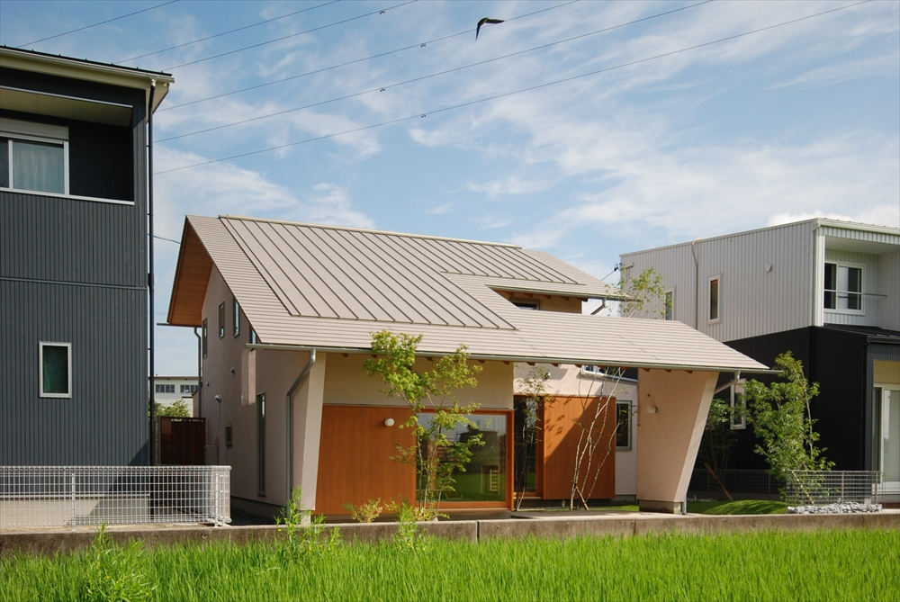
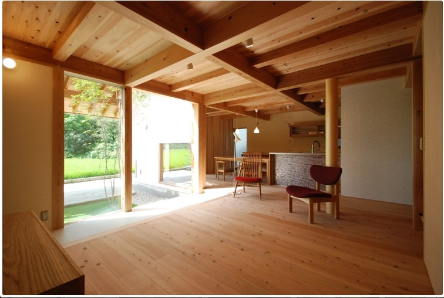

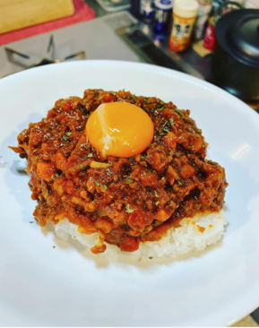
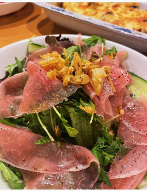
 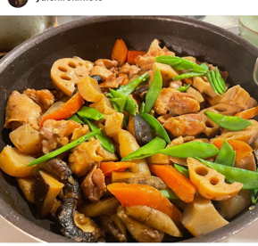
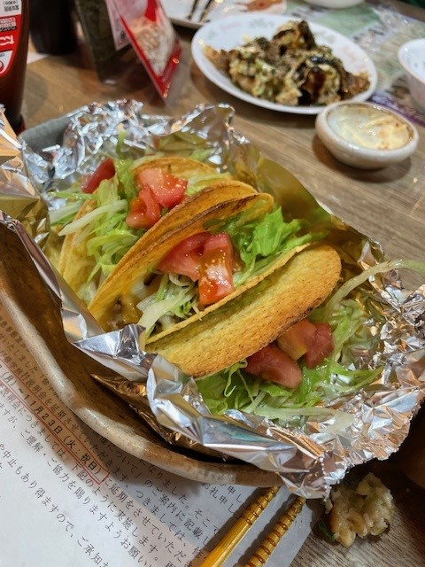
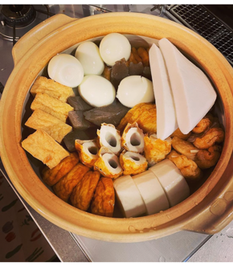
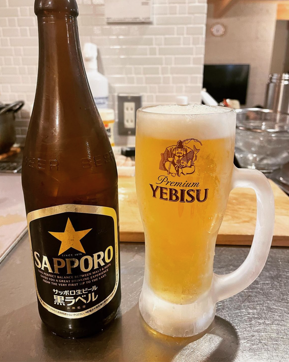
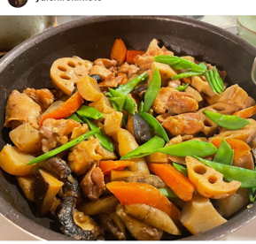
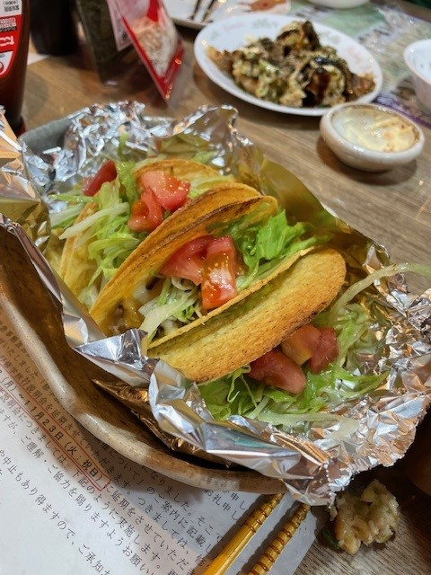
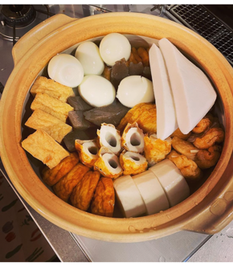
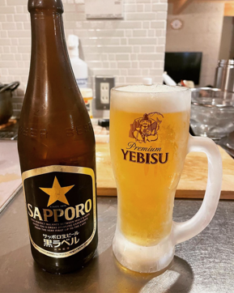
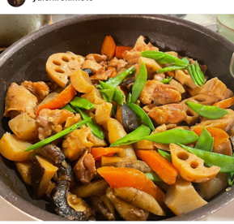
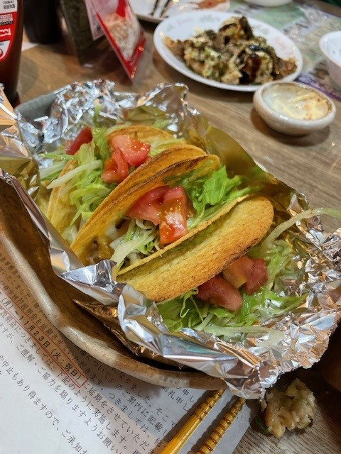
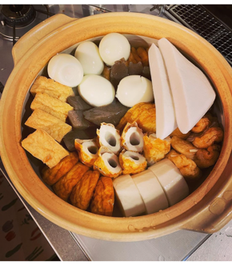
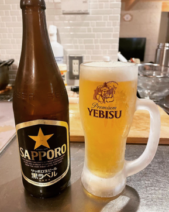
家族：チャレンジャーな奥様と高１、中３、中１の若いメンズと同居- 先日名古屋ウィメンズマラソンを走ってました！
- 息子はYouTuber！（登録者170人で父より発信力がある笑）
■キモティーズメンバーの日常
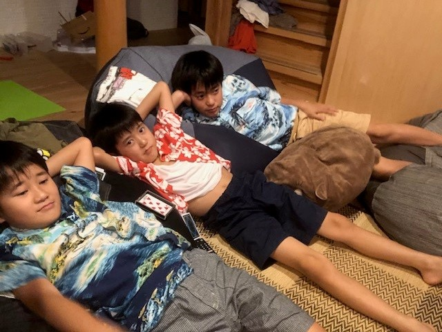
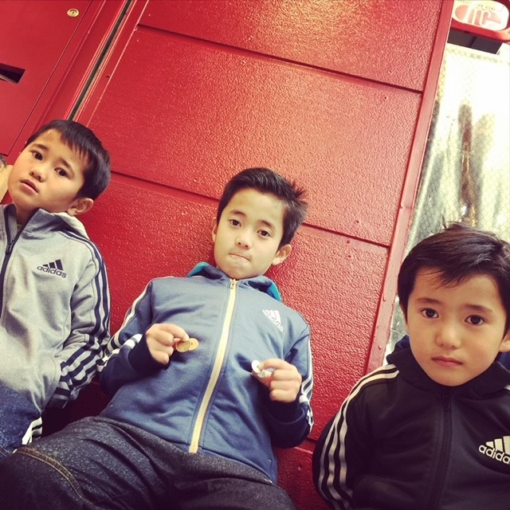
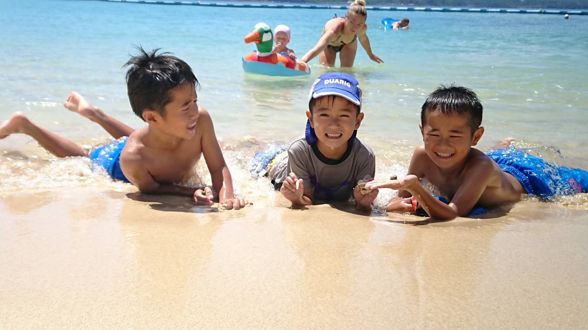
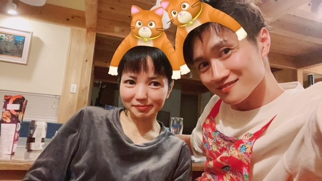
2、職場紹介
- 職場：堤工場 塗装成形部 第一塗装課
- 経歴：入社２０年ずっとライン作業！車づくりがお仕事の現場のベテランです！
PCはかなり苦手でコピペのショートカットも知りませんでした笑
仕事上の縁があり、約２年前から現場デジタル化のお仕事をさせていただいております💻 - DIGの目的：色々ありますが、一番は業務上のスキルアップです！！

3、お仕事紹介
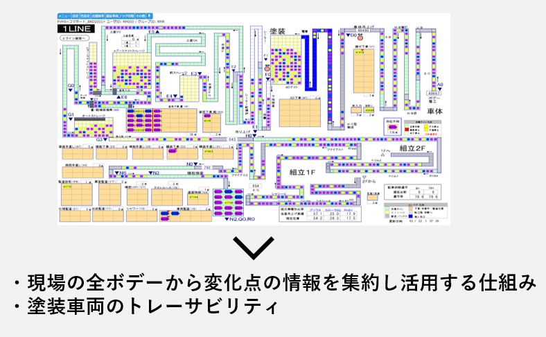
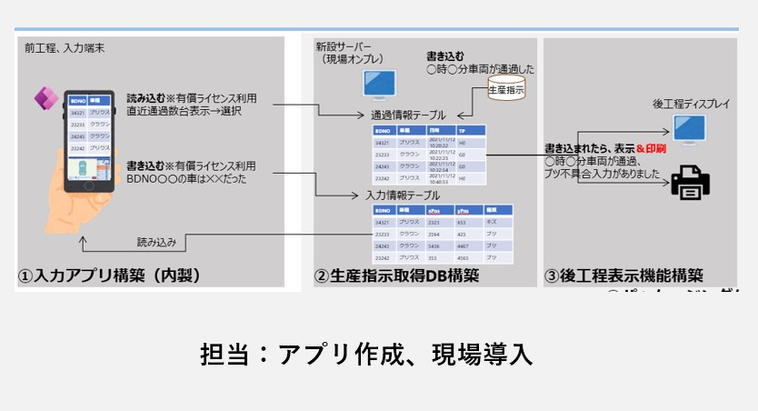
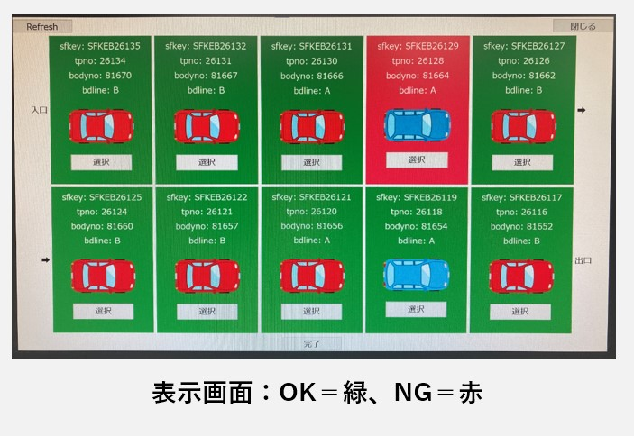